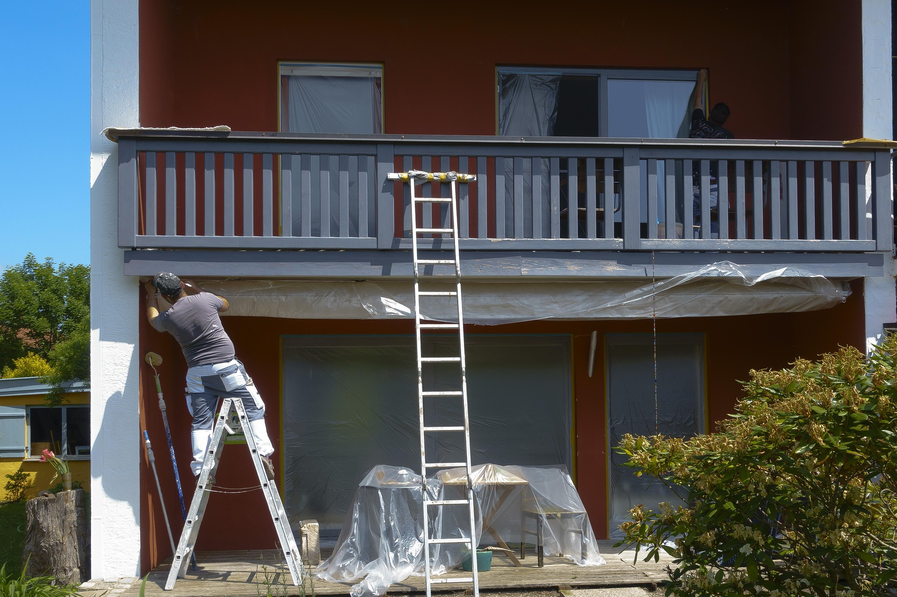
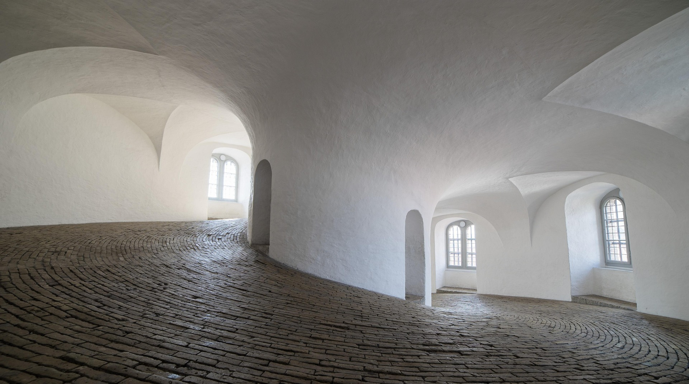
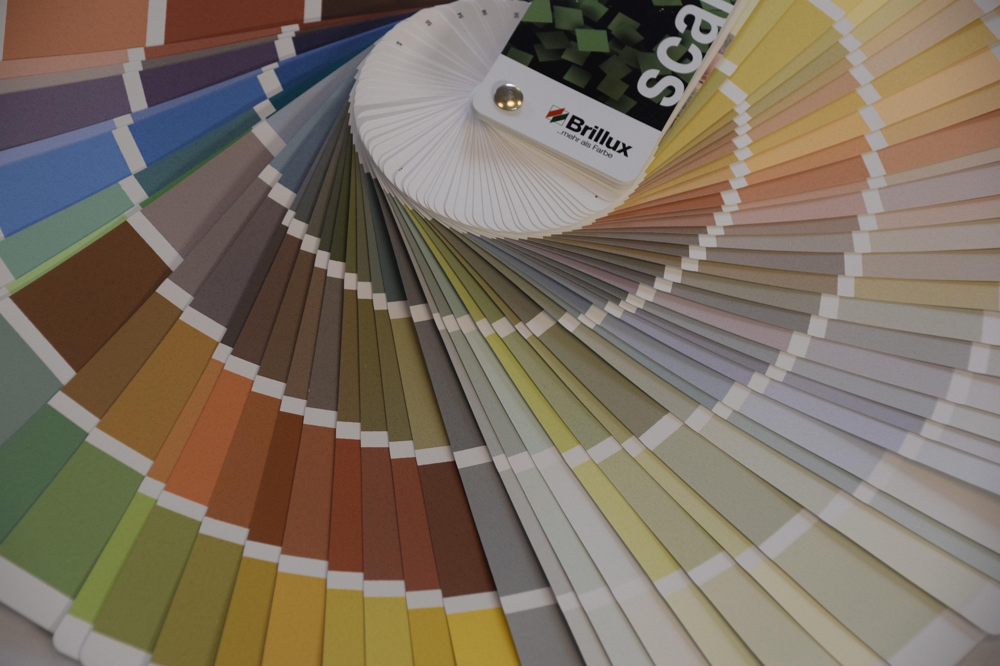
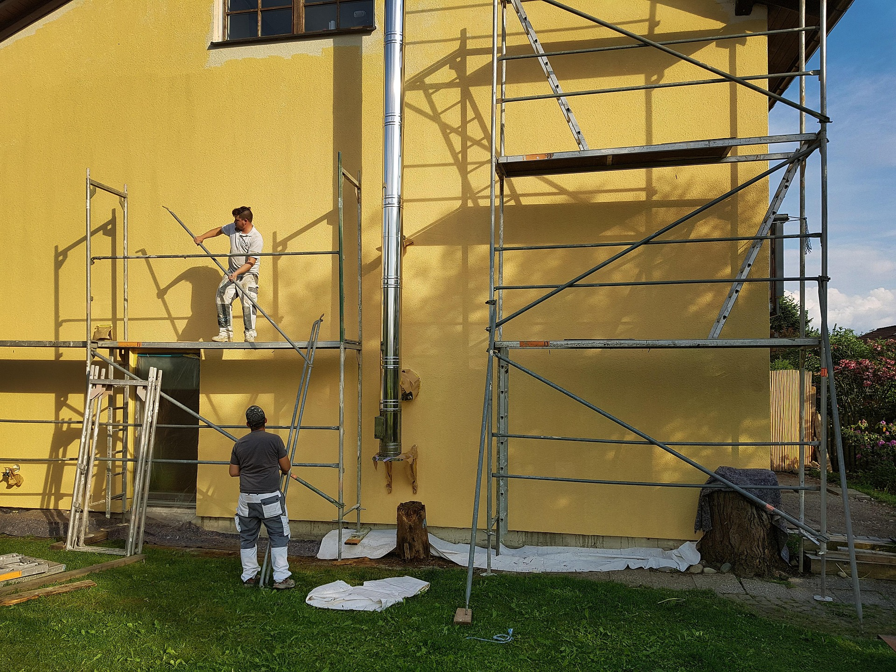
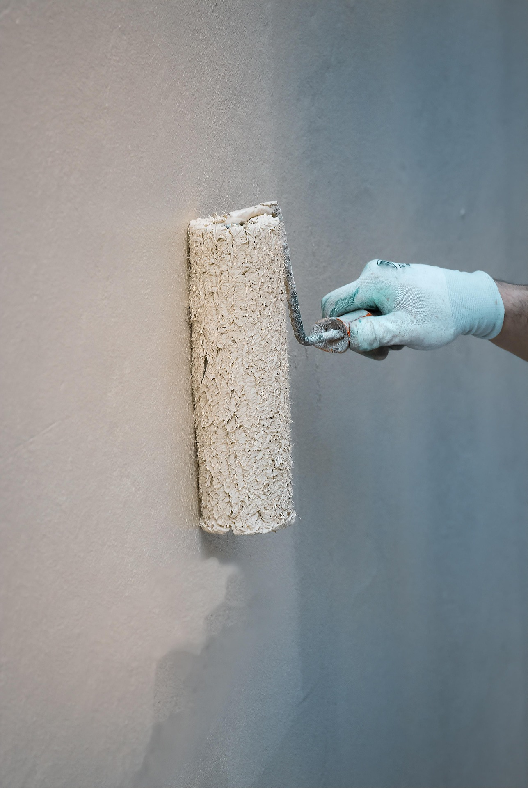
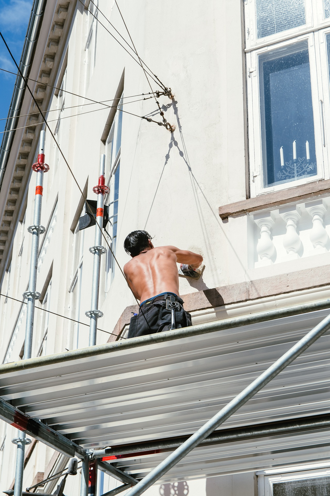
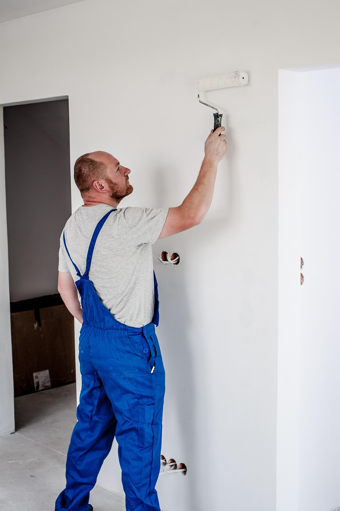
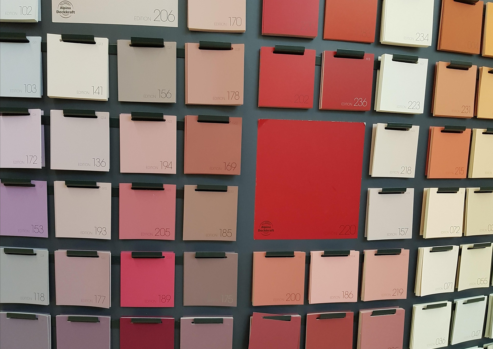
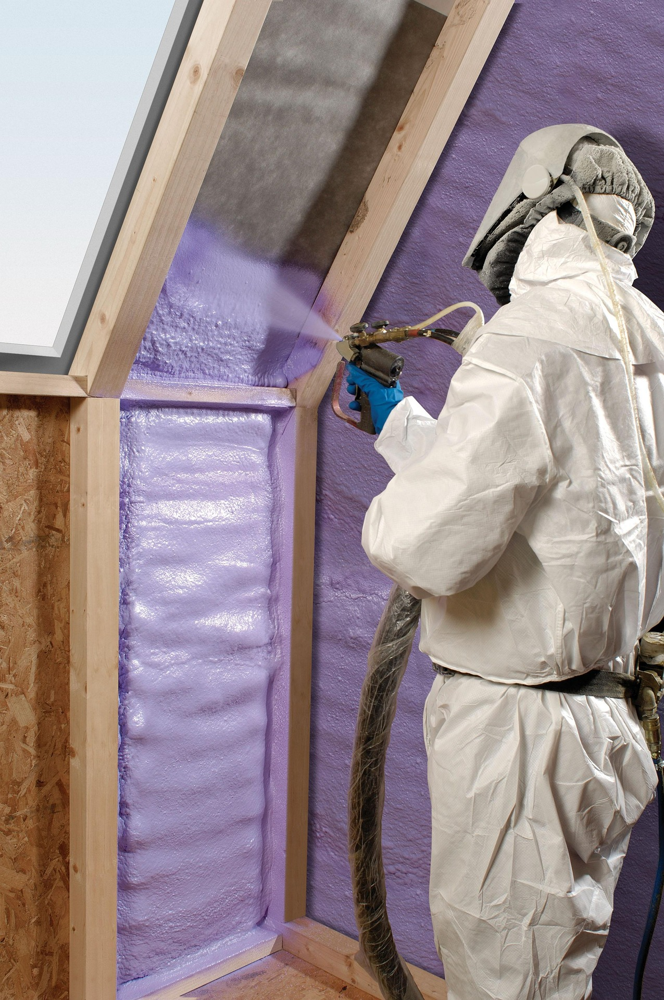

Profilo professionale
Cartongessista, Imbianchino, Posatore di Pavimenti, Ristrutturatore Edile e General Contractor per interventi residenziali e commerciali.
Impresa Edile a Potenza
Angelo Raffaele Romaniello opera da oltre 40 anni a Potenza, in provincia e nelle regioni limitrofe, offrendo lavori affidabili e orientati al risultato.
About
Cartongessista, Imbianchino, Posatore di Pavimenti, Ristrutturatore Edile e General Contractor per interventi residenziali e commerciali.
Services

Pareti e controsoffitti in cartongesso per ambienti moderni e funzionali.

Isolamento termico e finiture interne/esterne con attenzione a resa e durata.

Posa curata di parquet e moquette per abitazioni, uffici e spazi professionali.

Gestione completa del lavoro: pianificazione, coordinamento e consegna finale.

Soluzioni su misura per ambienti eleganti: rivestimenti, dettagli decorativi e finiture ad alto valore estetico.
Portfolio














Alternative Gallery
Rinnovamento facciate e superfici esterne con finiture contemporanee e pulite.
Pareti, controsoffitti e finiture interne con attenzione al dettaglio estetico.
Soluzioni chiavi in mano per trasformare gli spazi in ambienti pronti all'uso.
Image Highlights
Approfondimento
Le ristrutturazioni di pregio a Potenza richiedono esperienza tecnica, sensibilita' estetica e una gestione precisa di tutte le fasi di lavoro. Angelo Raffaele Romaniello realizza interventi orientati alla qualita', con attenzione a materiali, dettagli esecutivi e tempi di consegna, per offrire soluzioni davvero chiavi in mano.
Quando si parla di ristrutturazioni di lusso, il valore non sta solo nell'estetica finale, ma nella coerenza tra progetto, funzionalita' e resa nel tempo. Ogni intervento viene studiato per valorizzare gli ambienti e migliorare comfort, efficienza e vivibilita', sia in case private sia in immobili professionali.
L'obiettivo e' una riqualificazione di immobili di pregio che unisca eleganza e prestazioni, con lavorazioni accurate e una direzione lavori chiara dall'inizio alla consegna.
Il servizio integra interior design e progettazione e ristrutturazione in un processo unico. Questa impostazione consente di coordinare distribuzione degli spazi, scelta dei materiali e finiture finali, riducendo imprevisti e ottenendo risultati armonici.
Per chi desidera un restyling appartamenti moderno o classico, ogni scelta viene calibrata su stile abitativo, budget e obiettivi di valorizzazione dell'immobile.
Le finiture di pregio sono il cuore di una ristrutturazione ben riuscita. Materiali selezionati, posa professionale e cura dei dettagli portano a finiture di lusso per interni con elevato impatto estetico.
Tra gli interventi piu' richiesti rientrano pitture decorative e decorazioni murali, ideali per personalizzare ambienti living, camere e spazi rappresentativi.
Le opere in cartongesso su misura permettono di creare nicchie, pareti tecniche e soluzioni funzionali per illuminazione e impianti. I controsoffitti di design completano gli ambienti con linee pulite, giochi di volume e valorizzazione della luce.
In ottica SEO e ricerca locale, questo tipo di intervento e' spesso associato a richieste come parquet e controsoffitti di design, soprattutto per ristrutturazioni complete in appartamenti di fascia medio-alta.
Un pavimento di qualita' cambia la percezione dell'intero spazio. La posa di parquet di pregio e la realizzazione di pavimentazioni di lusso vengono eseguite con massima precisione, per garantire continuita' visiva, durata e comfort quotidiano.
Il risultato e' una casa piu' elegante, funzionale e coerente con lo stile complessivo definito in fase progettuale.
Con un approccio chiavi in mano, il cliente ha un unico referente per coordinamento operativo, gestione lavorazioni e controllo qualita'. Questo modello semplifica il processo, riduce i tempi decisionali e migliora l'efficacia del cantiere.
Se stai valutando ristrutturazioni di pregio a Potenza, contatta Angelo Raffaele Romaniello per un sopralluogo: dalla progettazione e ristrutturazione alle finiture di lusso per interni, ogni intervento e' sviluppato per offrire qualita' reale e valore nel tempo.
FAQ
Operiamo a Potenza, in provincia e nelle regioni limitrofe.
Si, seguiamo ristrutturazioni chiavi in mano con un unico referente operativo.
Puoi chiamare direttamente il 339 3877646.
Le tempistiche vengono definite dopo sopralluogo, in base al tipo di intervento e alla disponibilita'.
Si, realizziamo interventi anche in uffici, negozi e spazi professionali.
Certo, puoi richiedere anche solo pitturazione, cartongesso, pavimentazione o cappotto termico.
Si, seguiamo ristrutturazioni complete chiavi in mano con gestione operativa dell'intervento.
Contact
Telefono: 339 3877646
Sede: Fraz. Badia, 334 - Potenza